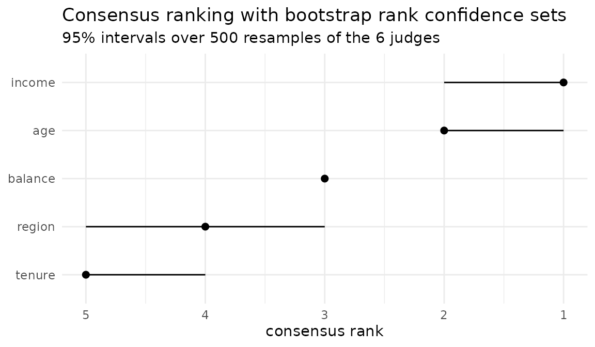

Two sources of instability, and they are not the same thing.
Intrinsic. Refit the same model on the same data with a different seed and the ranking moves. This is variability of the estimator, and multi-replicate judges measure it.
Data. Refit on a different fold or bootstrap sample and the ranking moves again. This is variability of the estimand, and multi-fold judges measure it.
A ranking that survives the first but not the second is telling you the sample is too small to support the claim, not that the model is unstable.
rank_confsets() reaches both, and says which one it is
measuring. type = "judges" resamples the panel you already
have: whatever variability you built into it — seeds, folds, methods —
is what the intervals reflect. type = "data" goes back to
the data instead, drawing the rows with replacement and rebuilding the
panel from scratch on every draw. The first is nearly free; the second
costs a refit of every model per replicate.
A panel that does not quite agree
library(rankimp)
judges <- rbind(
permutation_seed1 = c(1, 2, 3, 4, 5),
permutation_seed2 = c(1, 2, 3, 5, 4),
permutation_seed3 = c(2, 1, 3, 4, 5),
shap = c(1, 3, 2, 4, 5),
impurity = c(1, 2, 4, 3, 5),
loco = c(2, 1, 3, 5, 4)
)
colnames(judges) <- c("income", "age", "balance", "region", "tenure")
cr <- consensus_rank(judges)
cr
#> <consensus_rank>
#> judges : 6
#> variables : 5
#> algorithm : BB (ties allowed)
#> tau_x : 0.8
#>
#> # A tibble: 5 × 2
#> variable rank
#> <chr> <int>
#> 1 income 1
#> 2 age 2
#> 3 balance 3
#> 4 region 4
#> 5 tenure 5tau_x summarises the agreement. Whether that summary is
a fair one is a separate question, and item_consensus()
answers it by scoring every judge against the consensus:
item_consensus(cr)
#> # A tibble: 6 × 3
#> judge weight tau_x
#> <chr> <dbl> <dbl>
#> 1 loco 1 0.6
#> 2 impurity 1 0.8
#> 3 permutation_seed2 1 0.8
#> 4 permutation_seed3 1 0.8
#> 5 shap 1 0.8
#> 6 permutation_seed1 1 1A single judge far below the rest is a finding, not noise. Marginal and conditional importance measures diverge by construction when predictors are correlated, and the one in the minority will look like an outlier.
Rank confidence sets
set.seed(1)
cb <- rank_confsets(cr, n_boot = 500)
cb
#> <rank_confsets>
#> replicates : 500 ( quick )
#> level : 0.95
#> resampled : 6 judges, with replacement
#>
#> # A tibble: 5 × 4
#> variable rank lower upper
#> <chr> <int> <int> <int>
#> 1 income 1 1 2
#> 2 age 2 1 2
#> 3 balance 3 3 3
#> 4 region 4 3 5
#> 5 tenure 5 4 5Each variable sits at its consensus rank, with the interval of ranks it plausibly occupies when the panel is resampled. Overlapping intervals mean the two variables cannot be ordered on this evidence — the statement most importance plots decline to make.
autoplot(cb)
Probability of membership in the top k
prob_topk(cb, k = 2)
#> # A tibble: 5 × 2
#> variable probability
#> <chr> <dbl>
#> 1 income 1
#> 2 age 0.99
#> 3 balance 0.01
#> 4 region 0
#> 5 tenure 0“income is the most important variable” is a claim that
cannot be falsified. “income is in the top two with the
probability printed above” can be.
Selection with a guarantee
rank_select(cb, threshold = 3)
#> [1] "income" "age" "balance"A variable is selected only when its whole confidence set clears the
threshold. Selecting on the point estimate would ignore that the ranking
was estimated in the first place. The rule is conservative on purpose:
it answers “which variables am I sure about”, and
prob_topk() quantifies the doubt about the rest.
Resampling the data instead of the panel
Everything above resamples the panel. To ask the other question the
models have to be refitted, and type = "data" does exactly
that: each replicate draws the rows with replacement, refits every
model, recomputes every judge and takes the consensus again. It needs a
panel built by importance_judges(), which keeps the recipe
— the fits, the data, the settings — so that none of it has to be handed
over twice.
The two questions can disagree, and thin data is where they do. Eight predictors, five of them real with deliberately close effects, three pure noise, and eighty rows:
set.seed(7)
n <- 80
sim <- as.data.frame(matrix(rnorm(n * 8), n, 8))
names(sim) <- paste0("x", 1:8)
sim$y <- 2 * sim$x1 + 0.60 * sim$x2 + 0.55 * sim$x3 +
0.50 * sim$x4 + 0.45 * sim$x5 + rnorm(n, sd = 1)
set.seed(1)
forest <- randomForest::randomForest(y ~ ., data = sim, ntree = 200)
set.seed(2)
sim_panel <- importance_judges(forest, methods = c("permutation", "mdi"),
data = sim, target = "y", seeds = 1:3)
cr_sim <- consensus_rank(sim_panel)
cr_sim
#> <consensus_rank>
#> judges : 6
#> variables : 8
#> algorithm : BB (ties allowed)
#> tau_x : 0.8571
#> note : 3 equally optimal consensus rankings; combined, so variables they order differently are tied
#>
#> # A tibble: 8 × 2
#> variable rank
#> <chr> <int>
#> 1 x1 1
#> 2 x2 2
#> 3 x3 3
#> 4 x5 4
#> 5 x4 5
#> 6 x6 5
#> 7 x8 7
#> 8 x7 8Six judges — two methods on three refits — and a consensus that reads like a clean ordering. Now put an interval around it twice:
set.seed(3)
by_judges <- rank_confsets(cr_sim, n_boot = 500)
set.seed(3)
by_data <- rank_confsets(cr_sim, type = "data")
by_data
#> <rank_confsets>
#> replicates : 50 ( quick )
#> level : 0.95
#> resampled : 80 rows, with replacement; the panel is rebuilt on each
#>
#> # A tibble: 8 × 4
#> variable rank lower upper
#> <chr> <int> <int> <int>
#> 1 x1 1 1 1
#> 2 x2 2 2 8
#> 3 x3 3 2 7
#> 4 x5 4 2 8
#> 5 x4 5 3 7
#> 6 x6 5 2 7
#> 7 x8 7 3 8
#> 8 x7 8 4 8Read the table before reading on: some intervals do not contain the consensus rank they sit beside. That is the method, not a fault. Eighty rows drawn with replacement hold about fifty distinct ones, and a weak-but-real predictor is harder to place on that much less information, so its bootstrap ranks drift towards worse positions. Give a replicate all eighty distinct rows instead and it returns the point estimate exactly — which is how bootstrap bias is told apart from a panel rebuilt wrongly.
Then ask each the same question — which variables would you certify in the top three? — and compare the answers:
rank_select(by_judges, threshold = 3)
#> [1] "x1" "x2"
rank_select(by_data, threshold = 3)
#> [1] "x1"Where the two lists differ, the difference is the sample talking. A variable the panel agrees on but the data will not support is exactly the case the opening paragraphs describe: not an unstable model, a sample too small for the claim.
Two things to know about how a data replicate is built. A
resamples axis is replaced by the bootstrap’s own
in-bag/out-of-bag split, so a panel of models × methods × V
judges is rebuilt with models × methods of them and each
replicate votes with fewer judges than the point estimate did. And
refits preserve the number of trees and mtry and nothing
else, so a forest with a hand-tuned nodesize comes back at
the engine’s default — true of the seeds and
resamples axes too.
How much is a 95% set worth?
It depends entirely on which bootstrap you asked for, and the package
would rather say so than let you assume otherwise.
inst/simulations/rank-coverage.R measures it: eight
predictors, five of them real, 300 simulated datasets per cell, and a
check of how often the nominal 95% set contains the rank the generating
coefficients imply.
For the signal variables, resampling the data covered
- 0.966, 0.969 and 0.978 at
nof 80, 200 and 500 when the effects are close enough that the middle of the ranking is barely identifiable; - 0.993 and 0.998 at
nof 80 and 200 when they separate cleanly.
Resampling the judges covered 0.582, 0.655 and 0.711 on those close cells, and 0.801 and 0.929 on the separated ones.
So the data bootstrap covers, at or above its nominal level
everywhere it was measured, and the judge bootstrap covers nowhere. That
gap — 0.966 against 0.582 in the hardest cell — is the reason
type = "data" exists.
It is worth being clear about how the data bootstrap covers,
because it is not by being sharp. On the hardest cell its interval spans
5.1 of the 8 available ranks. That is the honest report: at
n = 80 with effects that close, the point estimate recovers
the true order of the five signal variables in 5% of replicates, so an
interval that admitted less would be claiming more than the data holds.
Width here is information, not failure.
The judge bootstrap is narrow on the same cell — 2.0 ranks — and
misses the true rank two times in five. Resampling a panel measures how
much the methods disagree with each other, which is not how far the
ranking would move on another sample. It answers a different question
cheaply, and judge_clusters() is the right tool for that
question.
Read a rank confidence set as a statement about what the evidence rules out. The rank is a discrete, non-smooth functional, and a percentile bootstrap is not automatically valid for such things: the figures above are measured on these designs, not promised in general.
A note on cost
Every bootstrap replicate solves a Kemeny problem, which is NP-hard. Exact branch-and-bound is fast on panels that agree and pathological on panels that do not: on tied panels of thirty judges, one exact solve took 0.010 s with ten variables, 0.78 s with eleven, and 280 s with twelve. That last figure is a day and a half for five hundred replicates.
rank_confsets() therefore resamples with the
"quick" heuristic by default and reports which solver it
used. On twenty tied panels of ten variables, "quick"
returned the identical consensus and the identical tau_x as
exact branch-and-bound. Pass algorithm = "exact" if you
want the guarantee inside the bootstrap and the panel is small enough to
afford it.
A data replicate adds a refit of every model to that solve, which is
why n_boot defaults to 50 there against 500 for the panel
bootstrap, and why a run that looks long announces its projected cost
before settling in.
Related work
vignette("against-set-stability") compares this
machinery with stabm,
which measures whether resamples select the same features rather than
whether they order them the same way. The two answer different questions
and a careful analysis wants both.